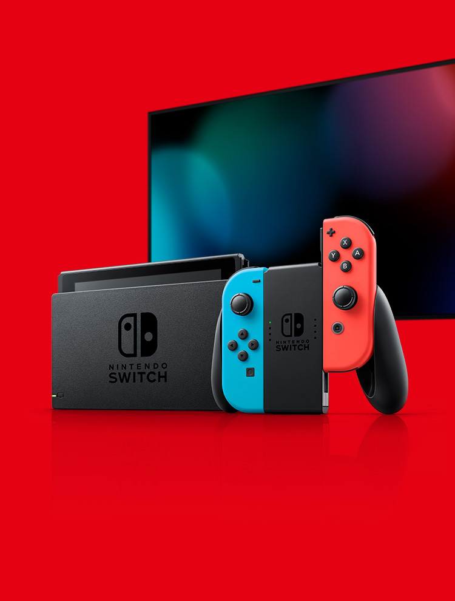
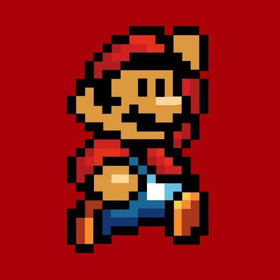
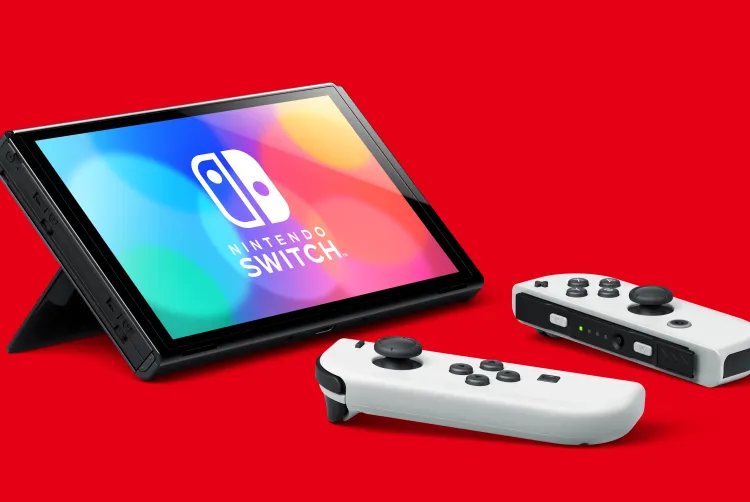

The Ultimate Gaming Experience
Explore the world of Nintendo Switch and discover the ultimate gaming experience, portable and versatile for every gamer.


About Nintendo Switch
The Nintendo Switch is a hybrid video game console developed by Nintendo. It can be used as a home console connected to a TV or as a portable handheld device. Its versatile design lets you play anywhere, anytime, with detachable Joy-Con controllers for multiplayer action.
With a growing library that includes iconic titles, the Switch offers endless entertainment for gamers of all ages.
The Legend of Zelda: Breath of the Wild
Super Mario Odyssey
Play your way
TV mode
Dock it and play on the big screen.
Tabletop mode
Stand it up and share the Joy-Con.
Handheld mode
Take it with you anywhere.
OLED Model

Nintendo Switch™ OLED Model Specifications
- 7-inchOLED screen
- 64 GBInternal storage
- Enhanced audioOnboard speakers
- Wired LAN portOn the dock
- 4.5 to 9 hoursApprox. battery life
- DetachableJoy-Con controllers